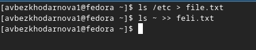
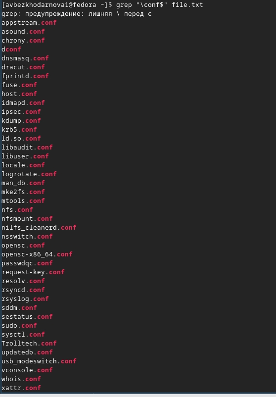
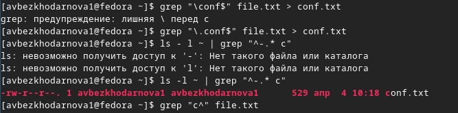
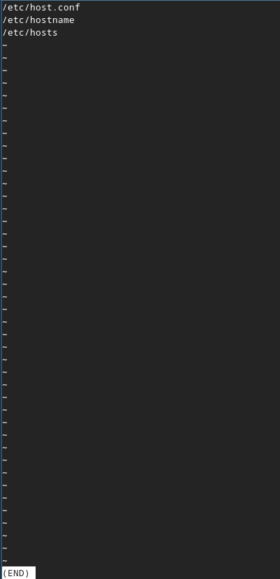
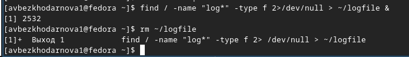
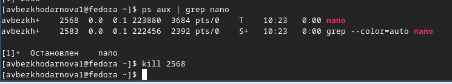
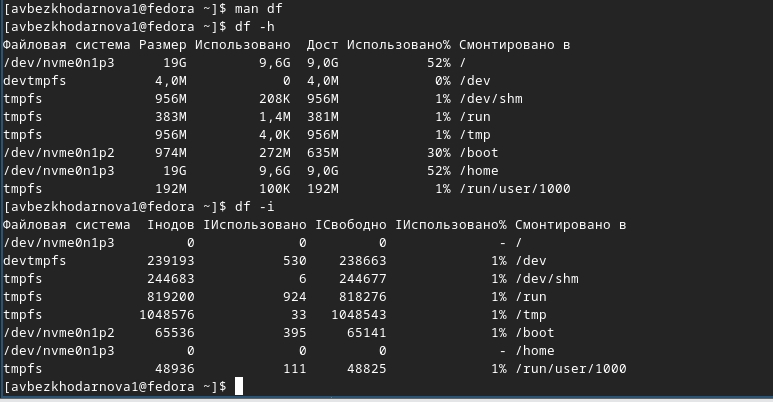
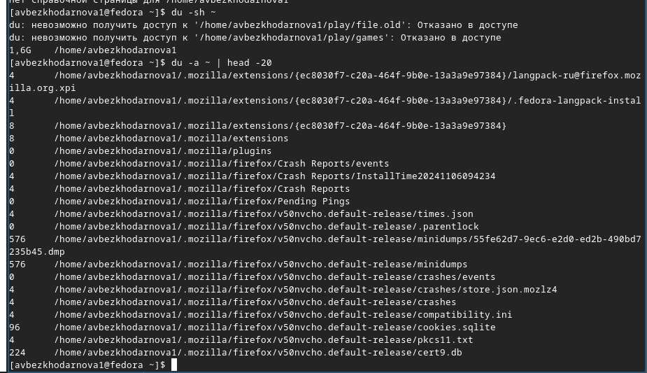
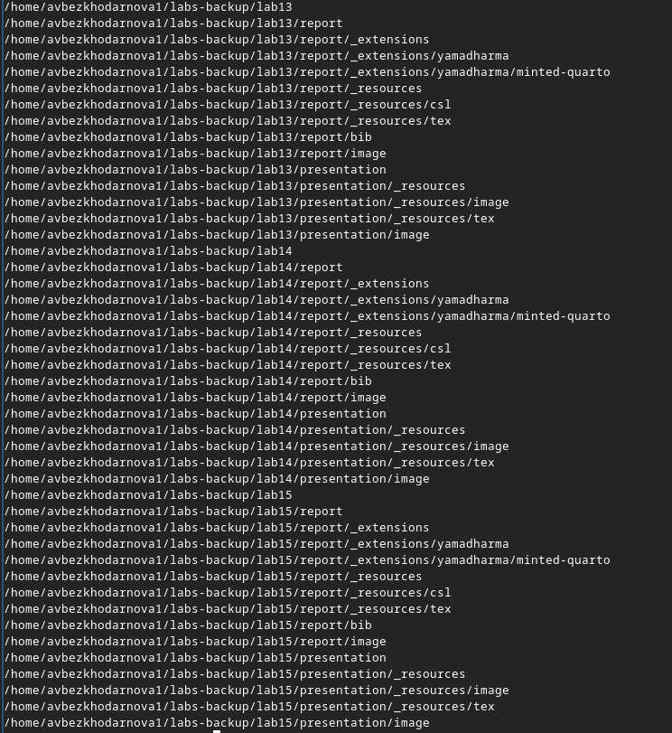

Лабораторная работа №8
Архитектура компьютеров
Безходарнова А.В.
Российский университет дружбы народов, Москва, Россия
28 марта 2026
Информация
Докладчик
- Безходарнова Алиса Викторовна
- Студентка НКАбд-01-25
- Алiса
- Российский университет дружбы народов
- 1032253545@rudn.ru

Цель работы
Ознакомление с инструментами поиска файлов и фильтрации текстовых данных. Приобретение практических навыков: по управлению процессами (и заданиями), по проверке использования диска и обслуживанию файловых систем
Задание
Выполнить лабораторную работу по указаниям.
Теоретическое введение
Большинство используемых в консоли команд и программ записывают результаты своей работы в стандартный поток вывода stdout. Например, команда ls выводит в стандартный поток вывода (консоль) список файлов в текущей директории. Потоки вывода и ввода можно перенаправлять на другие файлы или устройства. Проще всего это делается с помощью символов >, >>, <, <<.
Выполнение лабораторной работы
Сначала записываю в файл file.txt названия файлов из каталога etc. (рис. @fig:001).

Вывожу имена всех файлов с расширением .conf (рис. @fig:002).

Определяю файлы, которые начинаются с с (Рис @fig:003).

Вывожу имена файлов, которые начинаются с h (Рис @fig:004)

Запускаю в фоновом режиме, а потом удаляю файл logfile (Рис @fig:005)

Запускаю в фоновом режиме редактор nano. Определяю как завершить процесс и завершаю его (Рис @fig:006)

Выполняю команду df (Рис @fig:007)

){#fig:007 width=70}Выполняю команду du (Рис @fig:008)

Вывожу имена всех директорий (Рис @fig:009)

Вывод
В ходе данной лабораторной работы я ознакомилась с инструментами поиска файлов и фильтрации текстовых данных. Также приобрела практические навыки.
Контрольные вопросы
Какие потоки ввода вывода вы знаете? Стандартный поток ввода (stdin), стандартный поток вывода (stdout), стандартный поток вывода ошибок (stderr).
Объясните разницу между операцией > и >>. Операция > перезаписывает содержимое файла, а операция >> добавляет новые данные в конец файла, не удаляя существующие.
Что такое конвейер? Конвейер — это механизм, позволяющий передавать вывод одной команды на ввод другой команде с помощью символа |.
Что такое процесс? Чем это понятие отличается от программы? Процесс — это программа в момент выполнения, которая имеет свой идентификатор, память и окружение, а программа — это статичный набор инструкций, хранящийся на диске.
Что такое PID и GID? PID — это идентификатор процесса, GID — это идентификатор группы процесса.
Что такое задачи и какая команда позволяет ими управлять? Задачи — это процессы, запущенные из текущей оболочки; управляет ими команда jobs.
Найдите информацию об утилитах top и htop. Каковы их функции? Top и htop — это интерактивные утилиты для просмотра запущенных процессов, загрузки процессора, памяти и других системных ресурсов в реальном времени.
Назовите и дайте характеристику команде поиска файлов. Приведите примеры использования этой команды. Команда find используется для поиска файлов по различным критериям. Примеры: find ~ -name “.txt” — ищет все текстовые файлы в домашнем каталоге, find /etc -type f -name “.conf” — ищет все конфигурационные файлы в каталоге /etc.
Можно ли по контексту (содержанию) найти файл? Если да, то как? Да, можно с помощью команды grep с опцией -r для рекурсивного поиска. Пример: grep -r “искомый текст” ~/
Как определить объем свободной памяти на жёстком диске? Командой df -h
Как определить объем вашего домашнего каталога? Командой du -sh ~
Как удалить зависший процесс? Использовать команду kill -9 с указанием PID зависшего процесса.